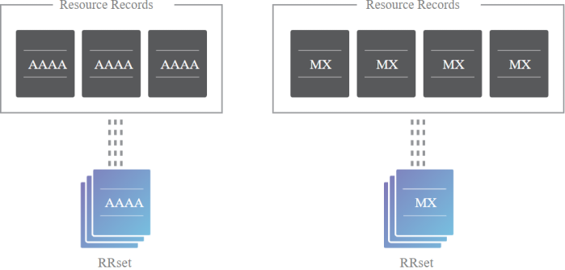

RRsets
When we secure a zone with DNSSEC the first step is group all the records with
the same type and the same label(e.g.: label.example.com) into a resource record set (RRset).
This mean
that:
◇ the full RRset gets digitally signed not the individual DNS records
◇ when we request a resource
record, we have to request and validate(with the public key) all the resource records of the same type and same
label
Bibliography:
https://www.cloudflare.com/dns/dnssec/how-dnssec-works/